歷史參考｜Gravity Sketch VR：在虛擬空間畫 3D 草模
這篇 2017 年文章介紹 Gravity Sketch VR：以 VR 控制器繪製曲線與曲面，搭配旋轉成形和對稱建模，再匯出到其他 3D 軟體整理。

製作流程 ★★★☆☆
完整分析
技術／流程變更
工具把草圖操作移進 3D 空間，可畫直線與平面、旋轉筆畫產生曲面，也能做對稱造型。當年的不同方案提供不同格式與圖層數限制。
Production 影響
適合用來理解載具、道具與產品概念如何先抓立體比例，再交給 DCC 精修。若團隊已有 VR 設備，可比較空間草圖與傳統草模的溝通效果。
導入測試與限制
這是歷史工具介紹，文中的裝置、價格與方案不能當成現況。正式使用前應查最新支援，並測輸出模型的比例、拓樸與曲面，確認後續能繼續編輯。
BRIEF｜來源已驗證；證據深度較有限，完整分析會明確區分已知資訊與待驗證事項。